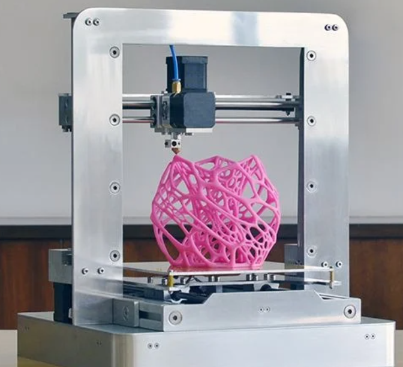
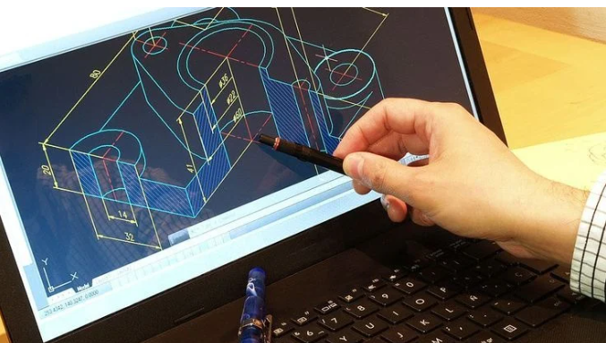

PRINCIPIOS BÁSICOS DE IMPRESIÓN 3D
SESIÓN 11 (23-04-2024)

La impresión 3D no es una tecnología futurista:
Se utiliza desde la década de 1980 y ahora está disponible para aficionados.
Los principios son sencillos, aunque hay algunos términos específicos que hay que aprender.
Este libro te enseñará:
- Qué tipos de impresoras 3D existen y cómo funcionan.
- El proceso de impresión 3D, desde el modelo 3D hasta la pieza final.
- Conceptos importantes como extrusión, rebanado, perímetros y relleno.
- Los materiales de impresión 3D más comunes y sus aplicaciones.
SESIÓN 12 (16-04-2024)
 Los programas CAD (Diseño Asistido por Computadora) son herramientas digitales fundamentales para diseñar productos, representar su geometría en 3D y crear planos o dibujos técnicos. Se utilizan en una amplia gama de disciplinas como arquitectura, ingeniería y manufactura, así como en diversos sectores industriales, incluyendo el consumo, automotriz, aeroespacial, textil y médico, entre otros. El CAD sirve como un estándar de diseño en toda la cadena de valor de una empresa, desde la conceptualización hasta la producción. La documentación resultante se almacena en sistemas de gestión de ciclo de vida (PLM) para proteger la propiedad intelectual de la organización y permitir futuras mejoras y referencias en la producción. Este enfoque garantiza la consistencia y la eficiencia en el desarrollo de productos y procesos industriales.